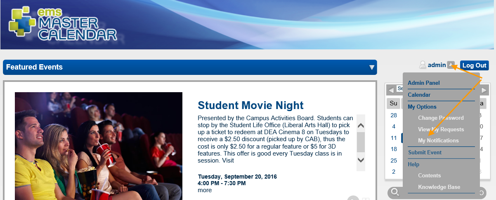

View Your Notifications
A notification is one of two types of Master Calendar system-generated emails that you can receive:
- Subscriptions—Emails about new, modified, or canceled events for a selected calendar or calendars.
- Reminders—Emails that alert you about the start of, or changes to, specific events.
- On the Master Calendar main menu, point to My Options > My Notifications.

The My Notifications page opens. By default, the Subscriptions tab is open.
- To narrow down the information you see:
- Sort your notifications based on a particular characteristic (for example, Event Title).
- Click the Delete icon next to the notification to delete a subscription or a reminder.